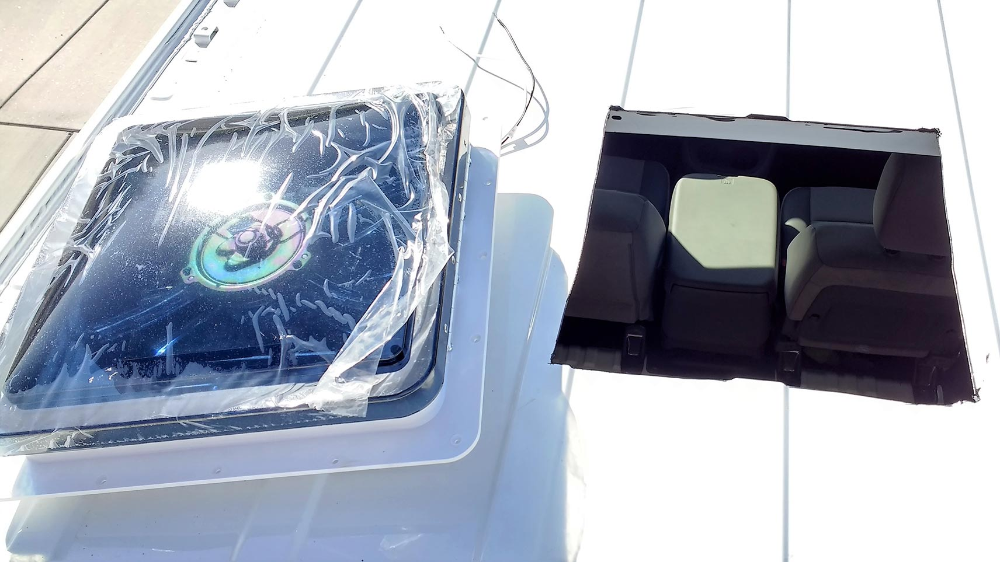
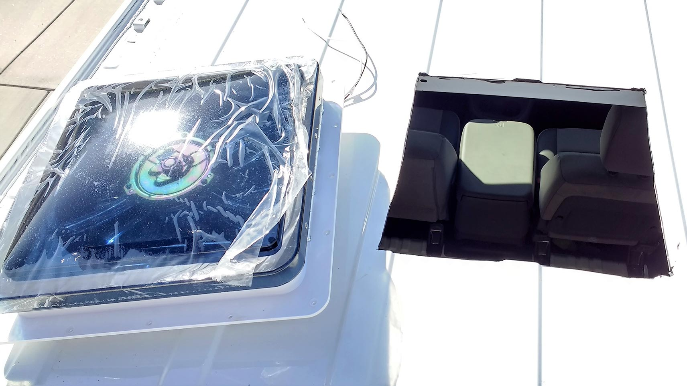

Dave's Van Conversion
In the beginning there was a Nissan NV2500...
BVC
Hello, to begin with, I'm Dave. My wife Heidi and I thought it would be great to get a tent trailer so we could travel more and to distant locations - much further than the three state area where we had grown up. The only problem was we owned two hybrid SUVs that had towing limits of 1500 pounds. We were unable to find a trailer that would fill our needs and could be towed by our SUV without killing its transmission and voiding the warranty. Our son Joseph mentioned that van conversions are a very popular way of camping and travelling so we begin the van conversion journey.
With the help of Joseph, Heidi, and the web I spent a couple of months watching YouTube, looking at Pinterest, and reading quite a few articles dealing with the DIYs (Do it Yourselves) of van conversions. I won't go into the details of why we bought the van we did or the changes we are making, because our needs are different just as everyone who reads this Blog is different. Read on and maybe some of our modification may become yours too.
I spent about four weeks drawing up different floor plans and after buying our van it became obvious which plan to use. I then started a shopping list for Amazon and EBay. I created a work and purchase list so it was in the order in which the work had be done, which is really important!
Here is our van. A Nissan NV2500 HD. We looked for used but after a period of time we decided to bite the bullet and buy new. Dave Smith in East Spokane had what we were looking for and what we were willing to spend. The first change was to remove the floor mat and particle board panels from the van.


The Window
The slider door window was the second step. I made a template per the instructions and copied it to the van so I could drill the first hole in our new van. Behold, a window in the van.


The Fantastic Fan
The Next addition was a Fan-Tastic Fan so we could remove cooking odors or heat from the van. Yes, it's the second cutting of the van's sheet metal, and here it is.
 

Solar Panels
The third round of holes are so we could mount the two 100W Windy Nation Solar Panels that will supplement our power usage and make us partially green-every little bit helps.

I believe the last exterior hole will this one for a shore power drop. If we are running short of power in our battery we'll be able to charge things back up. It's always good to have a backup.
Wiring In
These two pictures show the wiring routed through the ribs of the van so we can lay down the 3/8" Foil Double Bubble insulation. It's a moisture barrier and R6 rating. We'll also place foam paneling where we can and the rest will get foam from a can. Can hardly wait.
Floor Started
This evening I decided to insulate and lay the OSB in preparation of the final wood laminate that will be going down very soon. Also, I was getting very tired of the echo in the van without anything to dampen the road noise. Next I'll be insulating the rest of the van.